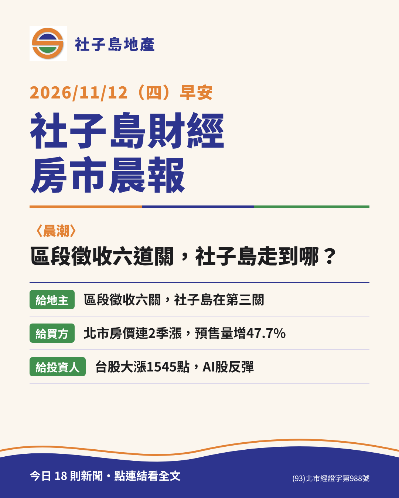

2026/11/12 (四) 早安
社子島財經房市晨報｜區段徵收六道關，社子島走到哪？
今日 18 則財經與房市新聞，依主題分成 7 類，社子島、主商圈與台北市的新聞排在最前面。點標題就能開啟原文。
〈潮汐表〉今天的三道潮水
- 給地主區段徵收大致要走六關；社子島目前在第三關，計畫書還在內政部審議，尚未公告，補償與抵價地申請都還沒開始。
- 給買方北市第2季住宅價格指數季增2.56%、連2季回升，12區全漲；預售屋交易量季增47.7%，三房最搶手。
- 給投資人台股11日大漲1,545點收44,257點，三大法人轉買超；美股週三AI股反彈，費半漲5.66%。
〈晨潮〉
區段徵收六道關，社子島走到哪？
昨天在濕地，阿公看著白鷺鷥問我們：「社子島的區段徵收，到底愛經過佗幾關？一關一關是按怎行的？」這個問題問得好。這半個月我們談了抵價地、補償、合建，都是一關裡面的事；今天把整條路攤開來，讓大家知道自己站在哪裡、前面還有什麼。依《土地徵收條例》的規定與各地實際辦理的經驗，區段徵收大致可以分成六關。
第一關，是「劃範圍、定比例」。區段徵收之前，要先報內政部核定開發範圍（《土地徵收條例》第4條），抵價地的比例也在這時候談，第39條規定以徵收總面積的50%為原則、不得少於40%。社子島已經過了這一關：內政部稍早原則通過了開發範圍與抵價地比例，今天新聞第一則就是那份官方新聞稿。
第二關，是「先協議、開公聽會」。依第10條、第11條，申請徵收前要先舉辦公聽會、先和地主協議價購，談不成才能申請徵收（這是我們11/10談過的事）。第三關，是「計畫書送內政部審」。市府擬好區段徵收計畫書，報內政部土地徵收審議小組審議核准。社子島目前就在這一關：市府說明，計畫書已在今年5月底報請內政部審議，8月審議小組的專案小組也聽取了居民意見。核准之前，土地照樣可以買賣、繼承，補償也還沒有開始算。
第四關，是「公告與通知」，也是地主最要緊的三十天。內政部核准後，由市府公告30日，並以書面通知所有權人與他項權利人（第18條）。這三十天裡，想領抵價地的人要用書面申請，不申請就是領現金（第40條）；對補償有意見，也要在這段期間提出。大法官釋字第731號特別要求，申請抵價地的期間應從書面通知送達的隔天起算，並一併告知預估的抵價地單位地價。公告之後，土地除了繼承、強制執行或法院判決，就不能再分割、合併、移轉或設定負擔（第23條）；補償費則應在公告期滿後15日內發給（第20條）。新北板橋埔墘4-7區，昨天（11/11）就進入了這一關。
第五關，是「拆遷、安置與工程」。地上物拆遷、居民安置、堤防與道路工程都在這一關，也是最花時間的一段。對社子島，市府的說法是「戶戶安置、分期分區、先安置後拆遷」；實際的安置方式與順序，要以將來的計畫與公告為準。
第六關，是「抵價地抽籤、選配、登記與點交」。工程差不多了，才辦抵價地分配：先公開抽籤決定順序，再依序選街廓（11/7談過），面積差額多退少補（第46條，11/8談過），最後登記、點交。今天新聞裡的新店十四張（B單元），10/28公告抽籤結果、11/4公告配地結果，就是走到最後一關的樣子。
所以，社子島現在離「公告的那三十天」還隔著一關，我們不猜時程，一切以內政部核定與市府公告為準。趁著還沒公告，現在最值得做的，是把權狀、戶籍、稅單、老厝的證明整理好，家裡的人先把想法談一談。往下滑，有北市房價連兩季回升與台股大漲的消息；最後在〈廟口泡茶區〉，我們等您來電。
區段徵收六道關卡（社子島在第三關）
- ① 劃範圍、定抵價地比例：內政部核定（已原則通過）
- ② 公聽會、先協議價購
- ③ 區段徵收計畫書送內政部審議 ← 社子島目前在這裡
- ④ 公告30日與書面通知：申請抵價地或領現金、提出異議；公告後禁止移轉
- ⑤ 地上物拆遷、安置與工程
- ⑥ 抵價地抽籤、選配、登記與點交
——社子島地產團隊
主商圈：社子島・北士科・關渡洲美平原1 則
社子島本週無新進度：市府說明區段徵收計畫已於今年5月底報請內政部審議，尚未核准公告；北士科、關渡洲美平原亦無新消息。以下為內政部稍早原則通過開發範圍與抵價地比例的官方新聞稿，今天〈晨潮〉談的「第一關」就是這一步，供參考
台北市4 則
北市地政局公布第2季住宅價格指數130.42、季增2.56%，連2季回升，12區全數上漲、內湖區季增3.27%最多；預售屋交易量1,285件、季增47.7%，三房為主力
市地重劃・區段徵收2 則
新店十四張（B單元）區段徵收已走到最後一關：10/28公告抵價地抽籤結果、11/4公告配地結果；台南永康崑大路市地重劃11/18～20分梯次點交土地
利率・房貸・資金1 則
外資美元需求縮減，新台幣11日收32.86元、升0.5分，央行尾盤微幅調節
房市走向3 則
信義估房市逐步築底、2027年有望改善；北北桃預售屋最低單價全面走高，台北最低每坪92.9萬、新北33.2萬；台中部分重劃區工地開挖卻不推案
稅務與法律實務2 則
財政部統計10月個人房地合一稅年月雙增，前10月累計由負轉正；國稅局提醒，死亡前2年內贈與的房產仍可能被併入遺產計稅
今日財經大事5 則
美股週三CoreWeave財報帶動AI股反彈，費半漲5.66%、輝達漲2.87%，台積電ADR漲4.25%；台股11日大漲1,545點收44,257點，三大法人轉買超202億元，外資連10賣但僅賣7.66億元
〈阿公講古〉
週四早上，阿公到坤天亭走走，廟埕剛掃過，香爐的煙慢慢往河的方向飄。
「六關喔，」阿公扳著手指頭算：「阮聽講幾十年，原來猶佇第三關。」他笑了笑：「毋過知影佇佗位，心肝頭較定。」
廟前幾個老鄰居在聊天，有人說將來公告出來，價數不知道會怎麼算，算得太少怎麼辦。
阿公聽了，也跟著擔心起來，回頭問我們：「若是公告出來的補償，阮感覺算了傷俗，敢會當講？欲揣啥人講？」
阿公的問題，我們明天回答。
〈廟口泡茶區〉
阿公從坤天亭慢慢走到廟口，榕樹下的茶已經泡好了。區段徵收走到哪一關、自己該準備什麼，都可以坐下來慢慢問。
區段徵收的公文、抵價地與配地，我們陪您一份一份看懂，再決定怎麼選；權狀、戶籍與稅單，也陪您趁早整理好。
想問問您：這六道關卡裡，您最想先弄懂的是哪一關？打個電話告訴我們，我們挑大家最關心的再寫得更細。
不急著成交。我們是守在堤邊的人，守著每一塊土地的權益，直到把它交到願意耕耘它的人手上。
📞 歡迎先來電 0922-252-969先通個電話聊聊，再約時間來廟口喝茶。
 掃描 QR code，加 LINE 好友LINE ID：@shezidao💬 加 LINE
掃描 QR code，加 LINE 好友LINE ID：@shezidao💬 加 LINE
社子島地產團隊｜service@shezidao.com.tw
台北市士林區延平北路九段288號
週一至週六 9:30–18:00（週四 9:30–13:30），週日公休📞 來電 0922-252-969
本站由社子島地產開發有限公司經營，為民間不動產資訊網站，非臺北市政府官方網站；政府公告請以臺北市政府與地政局網站為準。
本期新聞由社子島地產團隊自內政部、經濟日報、工商時報、住展雜誌、三立新聞網、新店十四張區段徵收開發案網站、安傳媒、優分析、ETtoday房產雲、中央社、風傳媒、鉅亨網、Yahoo股市 等來源收集，標題照原文，點擊即可開啟原始報導；法規說明僅供參考，實際權利義務以主管機關公告為準。〈晨潮〉〈阿公講古〉為本團隊之參考意見，不構成投資建議，亦不代表支持任何候選人。〈阿公講古〉的阿公，是我們依島上長輩的身影寫成的人物。